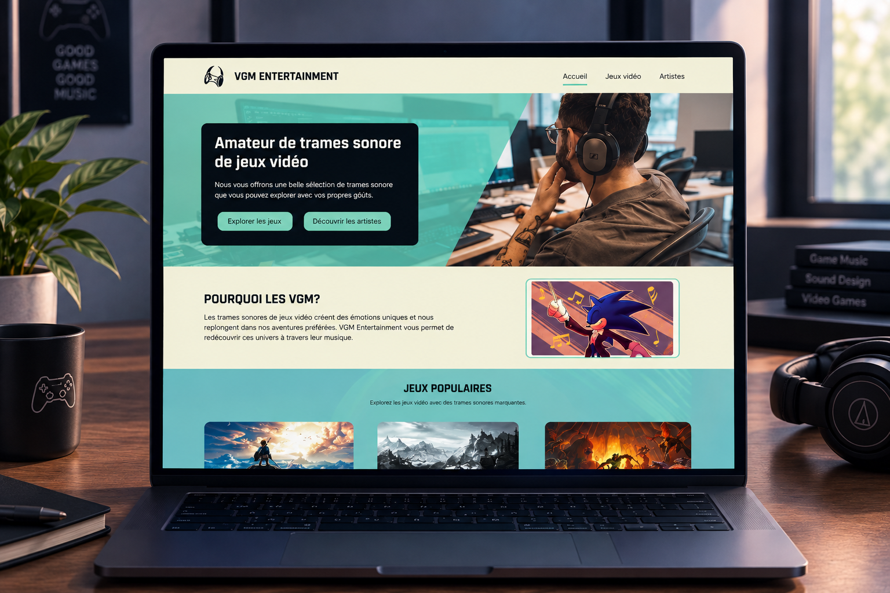
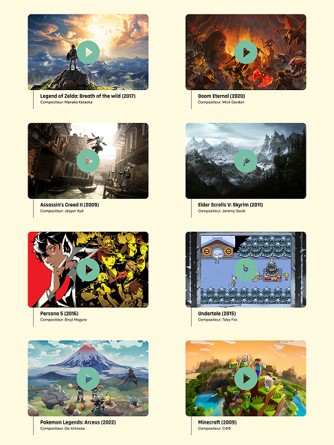

VGM Entertainment est conçue comme un répertoire de trame sonore de jeux vidéo pour donner un accès plus rapide à l’écoute et à la recherche d’une bande sonore en particulier.
Je n’ai pas utilisé l’IA pour ce projet.

La sélection de trame sonore